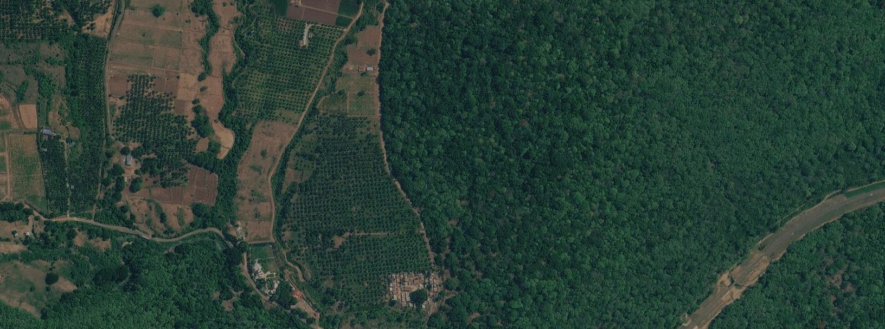

03.1
Verificación de parcelas
Comprobación de las geolocalizaciones de fincas y parcelas frente a líneas base forestales y la fecha de corte de la EUDR, con un resultado claro para cada parcela.
Prueba la verificación gratuita (en inglés)Pilar 03 · Monitoreo forestal y créditos de carbono
Tanto si necesita verificar miles de parcelas frente a la fecha de corte de la EUDR como monitorear la salud forestal de toda una región, desarrollamos rutinas cartográficas que distinguen con precisión el bosque de la agricultura y de los sistemas agroforestales.

Contexto
La EUDR exige a las empresas que comercializan ganado, cacao, café, palma aceitera, caucho, soja y madera en el mercado de la UE demostrar que estos productos no proceden de tierras deforestadas después del 31 de diciembre de 2020. Eso significa verificar cada parcela, no solo una muestra, y conservar las evidencias.
La experiencia de nuestro equipo incluye el diseño y despliegue de flujos automatizados de teledetección en Google Earth Engine, Python y aprendizaje automático en la nube para seguir y reportar la deforestación conforme a la EUDR, la aplicación de redes neuronales convolucionales (CNN) y métodos de series temporales para automatizar la clasificación forestal en regiones de alto riesgo, y la verificación EUDR para clientes internacionales.
También ofrecemos asistencia técnica para implantar la teledetección y los SIG en las actividades forestales, apoyando la gestión sobre el terreno con análisis satelitales a demanda que proporcionan a los propietarios forestales datos reales para tomar mejores decisiones de gestión.
Qué ofrecemos
Verificación a nivel de parcela frente a las fechas de corte de deforestación, con alertas automatizadas y evidencias listas para auditoría, basada en flujos escalables de teledetección y aprendizaje automático.
Comprobación de las geolocalizaciones de fincas y parcelas frente a líneas base forestales y la fecha de corte de la EUDR, con un resultado claro para cada parcela.
Prueba la verificación gratuita (en inglés)Validación de puntos y polígonos: coordenadas erróneas, solapamientos, parcelas sobredimensionadas y otros errores habituales.
Mapas forestales y detección de cambios con datos satelitales ópticos y de radar y análisis de series temporales.
Clasificación de bosques y cobertura del suelo basada en CNN para regiones donde los mapas globales no son lo bastante precisos.
Flujos en la nube que se vuelven a ejecutar a medida que llegan nuevas imágenes y generan informes listos para auditoría y paneles interactivos con alertas de deforestación por parcela.
Monitoreo de la salud y las perturbaciones forestales mediante indicadores medidos a lo largo del tiempo.
Experiencia
Nuestro equipo ha realizado monitoreo forestal para importadores agrícolas, silvicultores, asociaciones forestales y programas de conservación. Esto incluye:
Trabajos relacionados
Cuéntenos brevemente su proyecto. Normalmente respondemos en un día laborable.